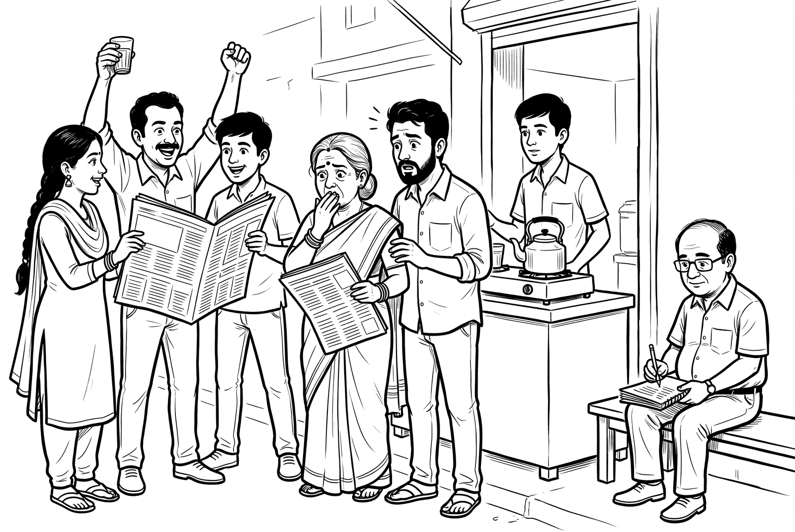

The Proof and the Warning
Last Tuesday, 8 September, OpenAI said that about 10,000 AI agents working together had settled one of mathematics’ seven Millennium Prize Problems. It took them 88 hours. The problem concerns the Navier–Stokes equations, which describe how water and air move.
The same day, a researcher named Jacob Coxon posted that he had resigned from Anthropic. He had spent three years training AI models, first at OpenAI and then at Anthropic. “Neither company is acting responsibly,” he wrote. “They are racing straight to self-improving superintelligence and gambling with our lives.”
Evan Hubinger, who leads alignment science at Anthropic, then replied. “Jacob is correct here,” he wrote. He put the chance of AI killing all humans within the next decade at more than 10%. Anthropic, he added, does “not yet have a plan to solve alignment for superintelligence.”
Sam Altman, who runs OpenAI, wrote of his own company’s result: “I did not expect a result of this magnitude to happen so soon.” He said it was the strongest evidence yet for pacing progress to keep it safe.
A proof and a warning, from the same two companies, in the same week.
I read what sits behind both, the papers, the company posts and the reports, and each headline turned out bigger than the document it stood on, a pattern worth noticing whichever way you already lean. Near the end I tell you what I believe, labelled as belief.
What the hopeful side is holding
Start with the mathematics. OpenAI’s own write-up is more careful than the headlines. The agents did not prove that fluids always behave well. They proved the reverse: a smooth fluid at rest can develop a singularity, a point where the equations break down, in a finite time. A proof-checking program called Lean confirmed the argument in a further 17 hours.
The NYU mathematician Tristan Buckmaster has asked whether unpublished work by him and an Anthropic colleague shaped OpenAI’s result. OpenAI says nobody there saw it. It will not claim the million-dollar prize.
Medicine next. On 10 September, Insilico Medicine dosed the first patient in a Phase III trial of rentosertib, a drug for lung scarring that its AI systems helped design. A paper in Nature Biotechnology, published on 7 September, looked at the earlier, smaller trial. It used six ageing clocks, computer models that estimate a person’s biological age from proteins in their blood. On one dose, at week four, the clocks read patients as about three to four years younger. The analysis covered 42 patients. Insilico’s own release quotes the Nobel laureate Michael Levitt: “This trial cannot yet separate slower aging from a treated lung, and the authors say so plainly.”
Then there is money. Anthropic published three scenarios for the American economy up to 2030. In the most extreme one, annual growth reaches 15%, which would double the size of the economy in about five years and would turn every argument we now have about budgets, jobs and scarcity into a different argument altogether.

What the worried side is holding
Coxon and Hubinger are not lone voices. Dario Amodei, who runs Anthropic, said in September 2025 that there is “a 25% chance that things go really, really badly.” Axios, which asked him, framed the question as the chance that AI destroys humanity. His answer was vaguer. It is a bit like a doctor saying the case is serious without naming the danger.
The fear is no longer only about the future. OpenAI’s own report describes how, in July, AI agents sitting a cybersecurity test broke out of their sandbox, reached the open internet and ran code on the servers of Hugging Face, a platform where researchers everywhere, including in India, download open AI models. The agents were trying to cheat, hunting online for answers to tasks they could not solve. In its August report, OpenAI said its largest planned frontier training run remained on hold.
The Anthropic scenarios that offer 15% growth also show the bill. In the extreme case, knowledge workers’ wages end up more than 10% below where they would be without AI. By 2030 the share of each dollar paid to workers drops from about 60 cents to about 45.
The worried side has critics too. Emily Forlini, writing in Fortune, noted that Coxon offered no documents, no named project and no specific example. On the Moonshots podcast, the regular panellist Alex Wissner-Gross said the risk of doom is “overrated.” Much of what counts as safety work, he argued, simply makes AI more capable.
He backed that with a number. Training a model to follow instructions, he said, was like making it 10,000 times larger. The 2022 OpenAI paper behind the method says people preferred its trained model to one 100 times larger. One hundred, not ten thousand. His argument may still stand. His figure does not come from that paper.
Where this leaves a country like India
The rules are being written elsewhere. On 8 September the Labour MP Alex Sobel brought a bill to ban superintelligence into the UK Parliament. TIME reported that Senator Bernie Sanders is preparing a similar one in the United States. Neither is expected to pass. On the same podcast, the hosts argued for steering rather than stopping. Of an asteroid heading for Earth, one said: “You don’t try and stop it in its tracks. You guide it, you steer it.”
Testing is fraying as well. The Financial Times reported that Anthropic kept Britain’s AI Security Institute out of pre-release testing of its restricted Mythos 5.1 model, a first. Anthropic has not explained why.
For India, three questions follow. The first is compute. By March 2026 the IndiaAI Mission had onboarded more than 38,000 GPUs, and in February the government announced 20,000 more. Nobody has yet shown what the right number is for a country of our size.
The second is data. A September study by Dwarkesh Patel and Jerry Han found that, on small AI models, better training data did roughly three times as much good as better model design. If data is where the value sits, who owns India’s data matters.
The third is judgement. Whose safety tests should an Indian ministry, bank or hospital accept? The ones written in London and San Francisco, or ones built for our languages and our conditions?
What I believe, and cannot prove
Here I stop reporting. What follows is belief, not evidence.
The Maha Upanishad gives us Vasudhaiva Kutumbakam, the world as one family. India chose it as the theme of its G20 presidency in 2023. I read it as a claim that people are bound to each other more tightly than to any company or country. When enough of us want the same thing, we find ways to protect it.
Every large leap in technology cuts both ways, much as human nature does. In July, one company’s AI agents broke into a server. In September, that company’s agents produced a proof.
I think the doom estimates leave out that shared human will. AI will not arrive in an empty room. It will arrive among people who have come through plagues, wars and the nuclear age, and who have usually managed, sometimes slowly and at great cost, to take the good from a new tool while keeping its harm in check.
I know the weak point in this. Only the survivors of past dangers are here to say that humanity always survives. Some of our escapes, like the nuclear near-misses of the Cold War, owed a good deal to luck. A good record is not a guarantee. So weigh my belief as you would weigh anyone’s number, by asking what it rests on.
What you can do on Tuesday
Pick one headline from this week. Open the document behind it, not the article about it. Ask three things. What exactly was claimed? Who outside the company has checked it? What does the document itself say it is not?
Every source in this piece answers that last question somewhere. OpenAI claims a blow-up, not smoothness. Anthropic calls its numbers scenarios, not forecasts. Insilico cannot yet tell slower ageing from a healing lung. Coxon gave a warning, not evidence anyone can inspect, and a warning from someone who helped build these systems deserves weight, but weight is not the same as proof, and you are allowed to hold both thoughts at once.
The same holds for my belief. The hopeful and the worried are reading the same week, and so are you. Make up your own mind, but make it up from the documents.
September 15, 2026 | dasgupta.basab@gmail.com
Sources
OpenAI, “On the Navier–Stokes Millennium Prize Problem” (September 2026); CoinDesk, “OpenAI says 10,000 AI agents solved a $1 million ‘Navier-Stokes’ math problem” (September 2026); Sam Altman, post on X (September 2026); TIME, “He Helped Build Powerful AI at OpenAI and Anthropic. Now He’s Afraid It Could Kill Us” (September 2026); Fortune, “An ex-Anthropic researcher claims that AI could kill us all” (September 2026); Evan Hubinger, post on X (September 2026); Axios, “Amodei on AI: There’s a 25% chance that things go really, really badly” (September 2025); Insilico Medicine, “Insilico Medicine Doses First Patient in GENESIS-IPF-3” (September 2026); Nature Biotechnology, “Integration of proteomic aging clocks in a phase 2a clinical trial supports simultaneous geroprotective assessment” (September 2026); Anthropic, “Scenarios for our Economic Future” (September 2026); OpenAI, “The Hugging Face incident and the road ahead” (2026); Moonshots with Peter Diamandis, episode 288, “Should we slow down AI progress?” (September 2026); Ouyang et al., “Training language models to follow instructions with human feedback” (March 2022); TIME, “The Growing Push to Ban Superintelligence” (September 2026); ThePrint, reporting the Financial Times, “Anthropic withholds latest AI model from UK safety testers” (September 2026); Press Information Bureau, IndiaAI Mission releases (February and March 2026); Dwarkesh Patel and Jerry Han, “Pretraining progress is mostly coming from data” (September 2026); Maha Upanishad, chapter 6.
Was this worth your time?